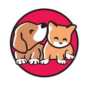

The ColMot Pet
- Home
- About
- Our Location


My pet is a wonderful addition to our home. I am an experienced pet parent and it's important to keep your canine companion's health and happiness a top priority. read more
Premium-quality dry food provides a well-balanced diet for adult dogs and may be mixed with water, broth or canned food. Your dog may enjoy cottage cheese, cooked egg or fruits and vegetables, but these additions should not total more than ten percent of his daily food intake. Puppies should be fed a high-quality, brand-name puppy food (large breed puppy foods for large breeds). Please limit "people food," however, because it can result in vitamin and mineral imbalances, bone and teeth problems and may cause very picky eating habits and obesity. Clean, fresh water should be available at all times, and be sure to wash food and water dishes frequently.


Properly caring for a dog begins with having the right perspective. Dog ownership should not be seen as a chore, but as an experience that enriches your life as well as that of your dog. Like humans, dogs need food, water, and shelter to survive. Yet, they also need physical care, mental stimulation, and nurturing to thrive. Providing these things is an essential part of keeping your dog healthy and safe and sets the foundation for a long, happy life with your dog.
Dogs love the outside world. All the new smells and things to see and people to meet. It’s great.
Because most dogs love to forage for treats, they should most definitely be considered a hobby.